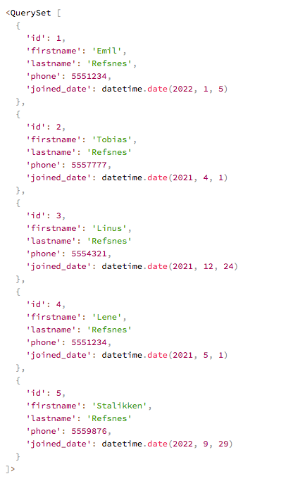
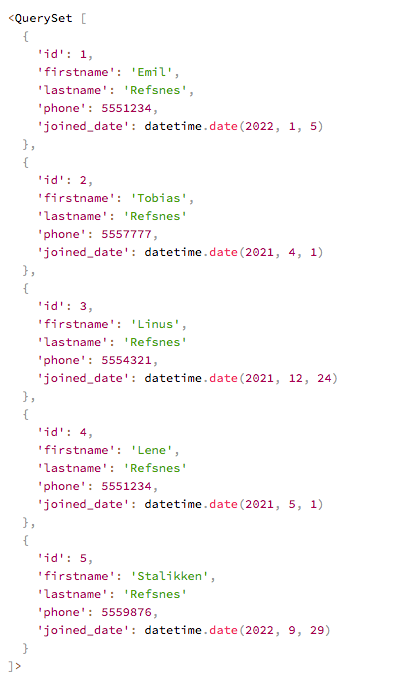

A for loop is used for iterating over a sequence, like looping over items in an array,
list or a dictionary.
Loop through items of a list:
{#This code below originally used in include file#} {% for x in fruits %}In views.py you can see what fruits variable looks like.
{# {% include "testing/for_loop_item.html" with fruits="x" %} #} {# {% include 'testing/for_loop_item.html' %} #}Loop through a list of dictionaries:
{# {% include 'testing/for_loop_dict.html' %} #} {# with cars=("x.brand", "x.model","x.year") %} #} {% for x in cars %}{{ x.model }}
{{ x.year }}
{% endfor %}In views.py you can see what cars variable looks like.
Data in a model is like a table with rows and columns.
The Member model we created earlier has five rows and each row has three columns:
| id | firstname | lastname | phone | joined_date |
|---|---|---|---|---|
| 1 | Emil | Refsnes | 555124 | 2022-01-05 |
| 1 | Emil | Refsnes | 5551234 | 2022-01-05 |
| 2 | Tobias | Refsnes | 5557777 | 2022-04-01 |
| 3 | Linus | Refsnes | 5554321 | 2021-12-24 |
| 4 | Lene | Refsnes | 5551234 | 2021-05-01 |
| 5 | Stalikken | Refsnes | 5559876 | 2022-09-28 |
When we fetch data from a model, it comes as a QuerySet object, with a similar format as cars example above: a list with dictionaries:
{# Screenshot W3Schools QuerySet example as an Image #} {# #}
{# easier to do  #}
{#
#}
{# easier to do  #}
{#  #}
#}
Loop through items fetched from a database:
{# {% include 'testing/for_loop_modeldata.html' %} #} {% for x in members %}{{ x.firstname }} {{ x.lastname }}
{% endfor %}In views.py you can see how to import and fetch members from a database.
The reversed keyword is used when you want to do a loop in reversed order:
{{ x.firstname }} {{ x.lastname }}
{% endfor %}In views.py you can see how to import and fetch members from a database for revesed keyword method.
The empty keyword can be used if you you want to do something special if an object is
empty:
In views.py you can see an emptytestobject.
{# {% include 'testing/for_emptyobject.html' %} #}The empty keyword can also be used if an object does not exist:
In views.py you can see that there is no myobject variable.
Django has some variables that are available for you inside a loop:
The current iteration, starting at 1
In views.py you can see what fruits_loop object looks like.
{# {% include 'testing/for_loop_counter.html' %} #}The current iteration, starting at 0
In views.py you can that we can still use same fruits_loop object.
{# {% include 'testing/for_loop_counter0.html' %} #}Allows you to test if a loop is on its first iteration of a loop.
Draw a blue background for first iteration of a loop:
In views.py you can that we can still use same fruits_loop object.
{# {% include 'testing/for_loop_first.html' %} #}Allows you to test if a loop is on its last iteration.
Draw a blue background for last iteration of a loop:
In views.py you can that we can still use same fruits_loop object.
{# {% include 'testing/for_loop_last.html' %} #}Sets up a parent loop for a child.
In views.py you can see what cars_parent and colors_parent objects look like.
{# {% include 'testing/for_loop_parent.html' %} #}The current iteration if you start at end and count backwards, ending up at 1.
In views.py you can that we can still use same fruits_loop object.
{# {% include 'testing/for_loop_revcounter.html' %} #}The current iteration if you start at end and count backwards, ending up at 0.
In views.py you can that we can still use same fruits_loop object.
{# {% include 'testing/for_loop_revcounter0.html' %} #}These for loop examples should now give you a good insight into what is possible with arrays and
getting data from a database,
from a Django perspective.